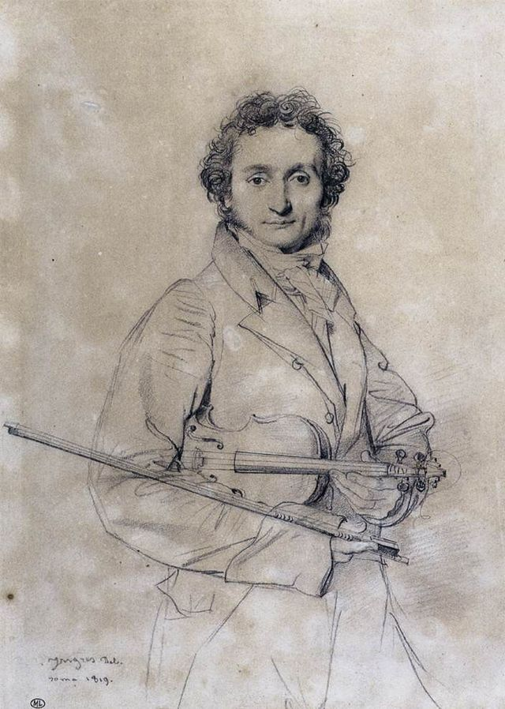

(1782–1840)

Even to the layperson, Paganini's name is synonymous with great violin playing.
An Italian violinist and composer, Paganini learned mandolin first, from his father,
at the age of five. At seven, he moved on to violin and quickly excelled at it. After
a breakthrough 1813 concert at La Scala in Milan, he became famous enough to tour
Europe, hitting every major city capital, from Poland to Britain. He suffered from
a variety of health conditions throughout his life, from depression to Marfan syndrome.
However, like Heifetz (#2), when playing became too much for him, he took on students. His
impressive dexterity in fingering and bow techniques were frowned upon at the time by his contemporaries
but renewed interest in these stylish techniques. Because of his talent and a
slightly bawdy lifestyle, he was widely rumored to have an association with the devil.
This rumor plagued him even after his death. It took the Church 4 years and an appeal
to the Pope to allow his body to be transported from his death in Nice
to his home in Genoa and 32 more years until his body was finally laid to rest.